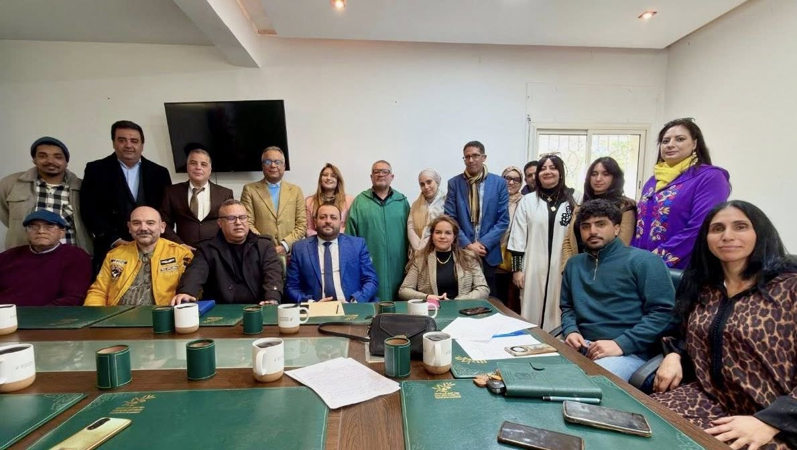

قام الأخ الأمين العام يوم الجمعة 06 مارس بانتداب الأخ سفيان بنلمقدم أميناً إقليمياً للحزب بعمالة مراكش، في خطوة تهدف لتقوية الأجهزة المحلية والاضطلاع بأدوارها التأطيرية والمجتمعية، بحضور الأخ الأستاذ النقيب عمر أبو الزهور.
عقد الأمين العام لقاءات مع الأمانة الإقليمية بالرباط برئاسة مراد طالب، وبسلا برئاسة نبيل بوسنة، لتدارس سبل انخراط المناضلين في التحضير الجيد لإنجاح محطة المؤتمر الوطني السابع.
استقبل الأمين العام وفداً عن النقابة الوطنية للأخصائيين النفسيين برئاسة د. فؤاد يعقوبي، حيث تم وضع خارطة طريق للترافع عن إطار قانوني يحمي المهنة ويصون كرامة الممارسين داخل المؤسسات التعليمية والصحية.
أشرف الأخ محمد العبدلاوي على مؤتمرات إقليمية ومحلية بكل من بني ملال وخريبكة، وصولاً لقلعة السراغنة التي شهدت مؤتمراً شبابياً قوياً اليوم الأحد 08 مارس تحت شعار "فعل سياسي شبابي مسؤول".